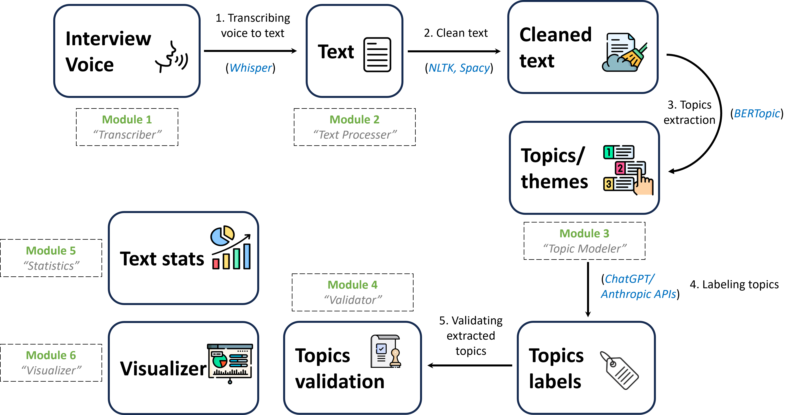
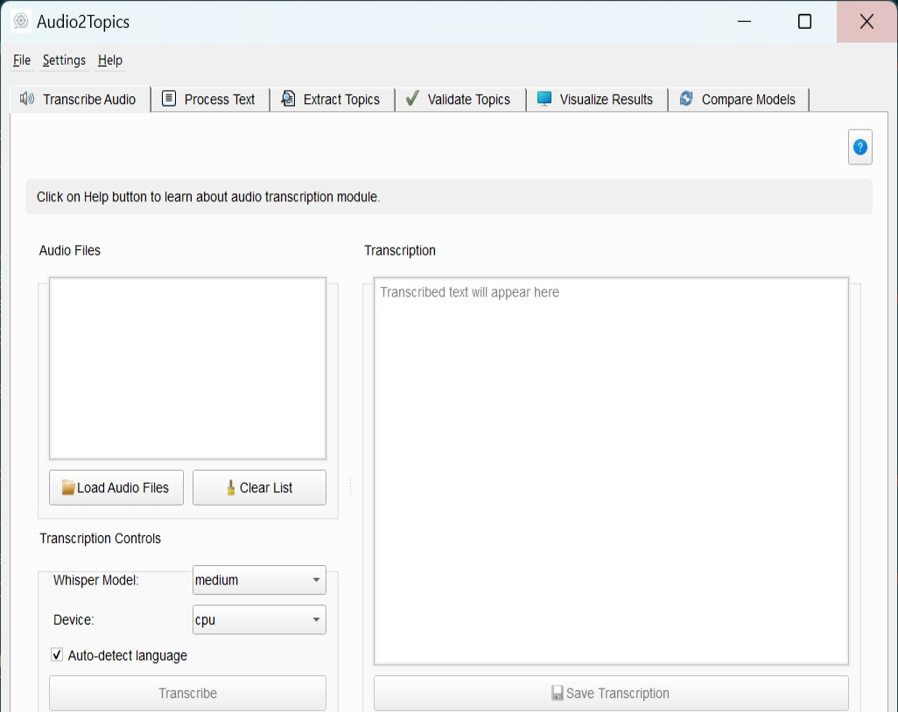

Overview
Audio2Topics Package 🔊🗂️




Audio2Topics is python packge that automizes topic extraction from voice files. The package is originally designed to aid researchers that performs interview research. Interview research typically incorporates a series of steps, starting from planning research questions, performing interviews, transcribing, and thorough manual text analysis to extract the main themes and topics of the transcribed text. This manual analysis phase is usually long and time-consuming. Additionally, the feasibility of manual analysis is limited by the volume of transcribed data. Audio2Topics accelerating this step by automtically converting voice files of interviews into topics simply and effectively.
The application provides an end-to-end pipeline that handles: - Audio transcription using OpenAI's Whisper - Text preprocessing and cleaning - Topic modeling with multiple algorithms - Topic validation and optimization - Advanced visualizations - Model comparison and evaluation
Audio2Topics bridges the gap between audio content and text analysis, making topic discovery accessible to researchers, content creators, analysts, and anyone who needs to identify key themes in audio materials.
Key Features
- Automated Audio Transcription: Convert audio files to text using state-of-the-art speech recognition
- Advanced Text Processing: Clean and normalize text with customizable preprocessing options
- Multiple Topic Modeling Approaches: Choose from BERTopic, LDA, and NMF algorithms
- Interactive Topic Exploration: Visualize and explore topics through multiple visualization techniques
- Topic Quality Validation: Assess topic coherence, diversity, and coverage
- Topic Highlighting: See how topics appear in original text with color highlighting
- Model Comparison: Compare different topic modeling approaches side by side
- LLM Integration: Enhance topic interpretability with AI-generated descriptions
- Comprehensive Reporting: Generate detailed reports with findings and visualizations
Workflow Overview
The Audio2Topics application guides users through a structured workflow:
- Audio Transcription → 2. Text Processing → 3. Topic Modeling → 4. Validation & Visualization
1. Audio Transcription
The first step involves converting audio files to text using OpenAI's Whisper model: - Upload audio files (MP3, WAV, M4A, FLAC) - Select Whisper model size (tiny to large) - Transcribe with automatic language detection - Review and save transcriptions
2. Text Processing
The transcribed text is then prepared for topic modeling: - Clean text by removing stopwords, special characters, etc. - Apply stemming or lemmatization - Process multiple documents simultaneously - Analyze text statistics for quality assessment
3. Topic Modeling
The core functionality extracts topics from processed text: - Choose from multiple algorithms (BERTopic, NMF, LDA) - Configure parameters like number of topics and n-gram range - Extract topics with adaptive processing for challenging data - Refine topics with LLM-generated descriptions
4. Validation & Visualization
Finally, assess topic quality and explore results: - Validate topics with coherence and diversity metrics - Find the optimal number of topics for your data - Create visualizations from word clouds to interactive topic maps - Highlight topics in original text - Compare different topic modeling approaches - Generate reports for sharing and documentation
Module Summary
Audio2Topics consists of several specialized modules, each handling a different aspect of the audio-to-topics pipeline:
Audio Transcription Module
The transcription module converts audio files to text using OpenAI's Whisper speech recognition technology. - Key Components: Transcriber class, TranscriberWorker, TranscriberTab - Features: Multiple model sizes, GPU acceleration, language detection, batch processing - Detailed Transcriber Documentation
Text Processing Module
The text processor prepares raw text for topic modeling through cleaning, normalization, and standardization. - Key Components: TextProcessor class, TextProcessorWorker, ProcessorTab - Features: Stopword removal, lemmatization, n-gram extraction, text statistics - Detailed Text Processor Documentation
Topic Modeling Module
The topic modeler extracts meaningful topics from processed text using multiple algorithms and approaches. - Key Components: TopicModeler class, TopicModelingWorker, TopicTab - Features: BERTopic, NMF, and LDA algorithms, adaptive processing, LLM topic refinement - Detailed Topic Modeler Documentation
Validation Module
The validator assesses topic quality and helps find the optimal topic model configuration. - Key Components: TopicValidator class, ValidationWorker, OptimizationWorker, ValidatorTab - Features: Coherence metrics, diversity assessment, topic count optimization - Detailed Validator Documentation
Visualization Module
The visualizer creates static and interactive visualizations of text and topic data. - Key Components: Visualizer class, VisualizationWorker, VisualizerTab - Features: Word clouds, topic heatmaps, interactive visualizations, topic highlighting - Detailed Visualizer Documentation
Comparison Module
The comparison tool enables side-by-side evaluation of different topic modeling approaches. - Key Components: ComparisonTab class, TopicModelRun, ComparisonRunDialog - Features: Multiple model runs, comparison visualizations, parameter impact analysis - Detailed Comparison Documentation
Installation and Setup
System Requirements
- Python 3.8 or higher
- 4GB RAM minimum (8GB+ recommended for larger models)
- NVIDIA GPU with CUDA support (optional, for faster processing)
- Internet connection for model downloads and API access
Dependencies
Audio2Topics relies on several key libraries: - PyQt5 for the user interface - OpenAI Whisper for speech recognition - NLTK and spaCy for text processing - BERTopic, scikit-learn, and UMAP for topic modeling - Matplotlib, seaborn, and wordcloud for visualizations - OpenAI/Anthropic APIs for LLM integration (optional)
Installation Steps
Install the package
Configure API Keys (Optional) - For LLM topic refinement, configure OpenAI or Anthropic API keys in the settings
Launch the application - In the terminal, activate the enviroments where the packages is installed and type:
OrUse Cases
Audio2Topics serves a wide range of applications across different domains:
Academic Research
- Analyze interview recordings for qualitative research
- Process lecture content to identify key themes
- Extract topics from academic presentations and symposia
Business Intelligence
- Discover trends in customer support calls
- Analyze meeting recordings for key discussion points
- Process earnings calls and investor presentations
Media Analysis
- Extract topics from podcast episodes
- Analyze broadcast interviews and discussions
- Identify themes in documentary content
Personal Knowledge Management
- Process recorded notes and ideas
- Analyze personal audio journals
- Extract topics from recorded lectures or webinars
Troubleshooting
Common Issues and Solutions
Audio Transcription
- Issue: Transcription fails to start
- Solution: Check internet connection, try a smaller model size, ensure sufficient disk space
Text Processing
- Issue: Many stopwords in processed text
- Solution: Adjust language setting, add custom stopwords, check preprocessing settings
Topic Modeling
- Issue: "Dimensionality error" with BERTopic
- Solution: Enable adaptive processing, try BERTopic-PCA or NMF instead
Validation
- Issue: Low coherence scores
- Solution: Try different preprocessing, adjust number of topics, try another algorithm
Visualization
- Issue: Interactive visualization not loading
- Solution: Check if the model type matches the visualization type, try a different visualization
Performance Optimization
- Use smaller Whisper models (base/small) for faster transcription
- Process documents in smaller batches for memory efficiency
- Use GPU acceleration when available
- Save models and results for reuse
Best Practices
Audio Recording Quality
- Use clear recordings with minimal background noise
- Ensure adequate volume levels
- Use lossless formats when possible
Document Preparation
- Split long recordings into shorter segments
- Group related content into meaningful documents
- Remove irrelevant sections before processing
Topic Modeling Strategy
- Start with a small subset of documents to test different approaches
- Use the Comparison tab to identify the best method for your data
- Validate topic quality before drawing conclusions
- Use LLM refinement for clearer topic interpretations
- Combine quantitative metrics with human judgment
Reporting and Sharing
- Export visualizations in appropriate formats for your audience
- Include topic words and example documents in reports
- Provide context for topics through LLM-generated descriptions
- Use interactive formats (HTML) for detailed exploration
Glossary
- BERTopic: Topic modeling algorithm that leverages BERT embeddings
- Coherence: Measure of how semantically related the words within a topic are
- Diversity: Measure of how distinct topics are from each other
- Elbow Method: Technique for finding the optimal number of topics
- LDA: Latent Dirichlet Allocation, a probabilistic topic modeling method
- Lemmatization: Process of reducing words to their base or dictionary form
- N-gram: Contiguous sequence of n items from a text sample
- NMF: Non-negative Matrix Factorization, a topic modeling algorithm
- Stopwords: Common words that are filtered out during text processing
- UMAP: Uniform Manifold Approximation and Projection, a dimensionality reduction technique
- Whisper: OpenAI's speech recognition model for audio transcription
References and Resources
Underlying Technologies
License
Released under the MIT License: For more details, see the LICENSE file.
Copyright (C) 2024 stata_codebook
Developed by: Mohsen Askar ceaser198511@gmail.com
Citation
If you use Stata Codebook in your research, please cite: